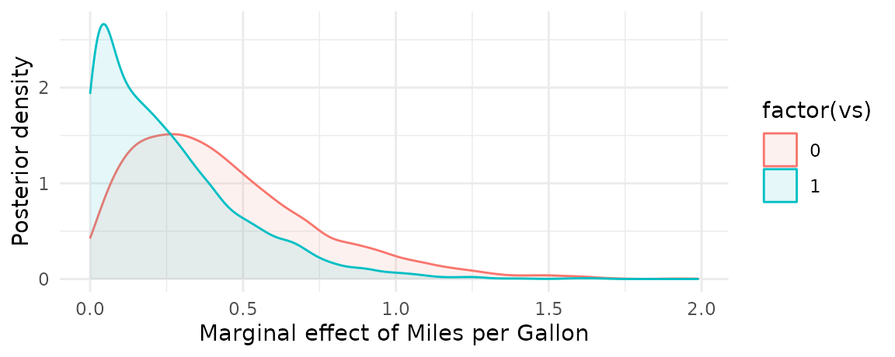

Support for brms is still experimental. Bug reports and feature requests can be submitted here: https://github.com/vincentarelbundock/marginaleffects/issues
I hope to improve performance considerably in the very near future.
Install the development version of the marginaleffects package:
Load libraries:
Fit a logit model with a multiplicative interaction:
Use marginaleffects() to compute marginal effects for each row of the dataset, and use summary() to compute “Average Marginal Effects”:
mfx <- marginaleffects(mod)
summary(mfx)
#> Average marginal effects
#> type Term Effect
#> 1 response hp 0.008891
#> 2 response mpg 0.190376
#> 3 response vs -0.135257
#>
#> Model type: brmsfit
#> Prediction type: responseCompute marginal effects with some regressors fixed at user-specified values, and other regressors held at their means:
marginaleffects(mod, newdata = typical(hp = c(110, 130)))
#> rowid type term dydx conf.low conf.high mpg vs hp
#> 1 1 response hp 0.005417668 9.751375e-07 0.01642068 20.09062 0.4375 110
#> 2 2 response hp 0.027906771 1.552959e-03 0.05749591 20.09062 0.4375 130
#> 3 1 response mpg 0.133227892 2.149755e-05 0.41782852 20.09062 0.4375 110
#> 4 2 response mpg 0.650261660 7.608570e-02 1.30706341 20.09062 0.4375 130
#> 5 1 response vs -0.062744871 -4.776285e-01 0.27871665 20.09062 0.4375 110
#> 6 2 response vs -0.068139887 -9.592951e-01 1.00804786 20.09062 0.4375 130
#> predicted
#> 1 0.06634644
#> 2 0.36577838
#> 3 0.06634644
#> 4 0.36577838
#> 5 0.06634644
#> 6 0.36577838The get_posterior_draws produces a dataset with drawid and draw columns.
draws <- get_posterior_draws(mfx)
dim(draws)
#> [1] 384000 13
head(draws)
#> drawid draw rowid type term dydx conf.low conf.high
#> 1 1 0.5007215628 1 response hp 0.0258044514 9.427303e-06 0.057315192
#> 2 1 0.5007215628 2 response hp 0.0258044514 9.427303e-06 0.057315192
#> 3 1 0.2334361208 3 response hp 0.0306199408 3.678601e-03 0.062356282
#> 4 1 0.1391855240 4 response hp 0.0268376987 3.131498e-04 0.058729271
#> 5 1 0.4930327374 5 response hp 0.0294994320 2.009673e-03 0.058916008
#> 6 1 0.0008522208 6 response hp 0.0003475321 3.983621e-15 0.001677937
#> am mpg vs hp predicted
#> 1 1 21.0 0 110 0.599041028
#> 2 1 21.0 0 110 0.599041028
#> 3 1 22.8 1 93 0.462564650
#> 4 0 21.4 1 110 0.332401718
#> 5 0 18.7 0 175 0.525548921
#> 6 0 18.1 1 105 0.004086748We can use this dataset to plot our results. For example, to plot the posterior density of the marginal effect when the vs variable is equal to 0 or 1:
marginaleffects(mod, variables = "mpg", newdata = typical(vs = 0:1)) |>
get_posterior_draws() |>
ggplot(aes(x = draw, color = factor(vs), fill = factor(vs))) +
geom_density(alpha = .1) +
labs(x = "Marginal effect of Miles per Gallon",
y = "Posterior density")
A similar strategy can be used to compute and display model predictions with the predictions function:
mod <- brm(mpg ~ hp * vs + am, data = mtcars)
predictions(mod, newdata = typical(vs = 0:1, hp = c(100, 200))) |>
get_posterior_draws() |>
ggplot(aes(y = factor(vs), x = draw)) +
stat_gradientinterval() +
facet_wrap(~ hp) +
labs(x = "Predicted Miles per Gallon",
y = "Engine shape (vs)")